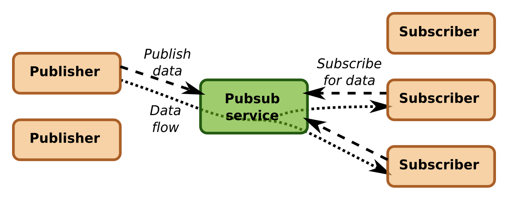

The Publish-Subscribe mechanism allows publishers to send datagrams to subscribers on a dedicated channel.
Channels are identified by an identifier named "message id".
This mechanism is mainly used for emission and reception of V2X messages.

Transmission of datagrams from a publisher to subscribers
Description of commands
- Subscribe : An application subscribes to a message id. All messages published to this message id will then be delivered to this application.
- Publish : An application publishes a message for delivery to all subscribers.
- Request : An application publishes a message for reliable delivery to all subscribers, and waits for their response.
Subscribe command
The subscribe command may be used by an application to receive messages from publishers or requesters. The application subscribes to a message id. Depending on the API, it receives messages through a callback method or as an output.
| I/O | Mand. | Variable | Description |
| in | x | message id | Id of the dataflow, e.g. the input CAM message processed by the CaService |
| in | x | format | Requested format for the data flow: Generic, JSON, ASN1, ... |
| out | x | subscribe id | Identifier for the subscription |
Each time a publish/request operation is performed, the client application will receive the content of the message and its metadata via a previously registered callback.
The subscribe callback method is defined as follows:
| I/O | Mand. | Variable | Description |
| in | x | message | Published/requested message |
| in | | metadata | Metadata associated with the message |
| in | x | Subscribe id | Subscription identifier |
| in | | Request id | Reliable request identifier |
| out | | message | Pending response (only relevant for Request) |
| out | | metadata | Pending response metadata (only relevant for Request) |
Code samples
Subscribe : Neighbouring stations : Subscribe to received CAM message (JSON or XML) and print RSSI, station id, position and distance
Command Line
$ mwpubsub -a 12345 -m MESSAGE_ID -s
C/C++ API
static void printCamMessage(struct choir_pubsub_message* message, int32_t subscription_id, void* u_data) {
printf("%.*s\n", message->data_length, message->data);
}
(...)
int subscribe_id = choir_subscribe(choir_handler, MESSAGE_ID, NULL, printCamMessage, NULL);
Java API
private class PrintCamMessage implements AdaptiveMessageListener {
@Override
public void onReceivePublication(AdaptiveMessage message, int subscriptionId) {
System.out.println(message.toString());
}
}
(...)
pubsubservice = yogokoClient.getPubSubService();
pubsubservice.register(APPLICATIONID, new PrintCamMessage());
cam_subscriptionid = pubsubservice.subscribe( MESSAGE_ID, APPLICATIONID, AdaptiveMessageType.JSON);
Websocket API (JS)
let ws = new WebSocket("ws://127.0.0.1:8080/pubsub/sub/32");
ws.onmessage = function (msg) {
let data = JSON.parse(msg.data);
let position = data.cam.camParameters.basicContainer.referencePosition;
console.log("CAM : RSSI => %s, StationID => %s, position: => %s %s, distance: => %s",
data.header.rssi, data.header.stationID, position.latitude, position.longitude, data.distance);
}
Publish command
The publish command may be used by an application to publish messages to subscribers. The message may be sent along with associated metadata which is a series of key-value pairs.
| I/O | Mand. | Variable | Description |
| in | x | message id | Id of the data flow |
| in | x | message | Message to publish |
| in | | metadata | Metadata associated with the message |
Code samples
Publish : PositionFeed : send position fix to message ID 201 using
Command Line
$ echo "${message}" | mwpubsub -a 12345 -m MESSAGE_ID -p
C/C++ API
struct choir_pubsub_message messageToSend = CHOIR_PUBSUB_MESSAGE_INIT;
(...)
choir_publish(choir_handler, MESSAGE_ID, &messageToSend);
Java API
pubsubservice = yogokoClient.getPubSubService();
Metadata metadata = new Metadata();
String message = "Message to send...";
AdaptativeMessage networkMessage = new BasicNetworkMessage( message.getBytes(), metadata, AdaptiveMessageType.ASN1_UPER);
pubsubservice.publish(MESSAGEID, networkMessage);
Websocket API (JS)
// Publish
let ws = new WebSocket("ws://127.0.0.1:8080/pubsub/pub/201");
ws.onopen = function (msg) {
ws.send('{"latitude":"48.1350568", "longitude":"-1.6221928"}');
}
Request command
The request command may be used by an application to request messages to subscribers. The message may be sent along with associated metadata. The requester will then wait for responses from subcribers.
| I/O | Mand. | Variable | Description |
| in | x | Message id | Id of the data flow |
| in | x | message | Message to publish |
| in | | metadata | Metadata associated with the message |
| out | x | Response count | Number of responses received from subscriber(s) |
| out | | Response messages and metadata | Response message and associated metadata returned by subscribers |
Code samples
Send a Denm Trigger, update and termination
Command Line
$ echo "${message}" | mwpubsub -a 12345 -m MESSAGE_ID -p -R
C/C++ API
char * myFormatedMessage = malloc(512*sizeof(char));
(...)
struct choir_pubsub_message messageToSend = CHOIR_PUBSUB_MESSAGE_INIT;
(...)
struct choir_pubsub_message* messageAnswer = NULL;
uint16_t nbrResponse = 0;
choir_request(choir_handler, MESSAGE_ID, &messageToSend, &nbrResponse, &messageAnswer) != -1)
printf("%.*s\n", messageAnswer->data_length, messageAnswer->data);
Java API
private RequestApplicationExample implements AdaptiveMessageListener {
@Override
public void onReceivePublication(AdaptiveMessage message, int subscriptionId){
System.out.println("A publication have been received with the following messages : " + message.toString());
}
@Override
public void onReceiveRequest(AdaptiveMessage message, int subcriptionId, long requestedId{
System.out.println("A request have been received with the following message : " + message.toString());
return new BasicNetworkMessage(new String("Response").getBytes, AdaptiveMessageType.ASN1_UPER);
}
}
(...)
pubsubservice = yogokoClient.getPubSubService();
pubsubservice.register(APPLICATIONID, new RequestApplicationExample());
Metadata metadata = new Metadata();
String message = "request";
AdaptiveMessage networkMessage = new BasicNetworkMessage(message.getBytes(), metadata, AdaptativeMessageType.ASN1_UPER);
AdaptiveMessage[] replies = pubsubservice.request(MESSAGEID, networkMessage);
for( AdaptiveMessage reply : replies){
NetworkMessage networkReply = (NetworkMessage) reply;
if (networkReply != null) {
System.out.println("Reply is " : + new String(networkReply.formatData()));
} else {
System.out.println("The reply is null");
}
}
Websocket API (JS)
let ws = new WebSocket("ws://127.0.0.1:8080/pubsub/req/25/4545")
var request = { (...) }
ws.send(JSON.stringify(denm))
Sequence diagrams
Publish
Message distribution
- Subscriber provides a unique application id to register to the Pubsub Service
- Subscriber subscribes to a message id
- Pubsub Service acknowledges the subscription by returning a subscription id
- Publisher publishes a message on the message id (may be done multiple times)
- Pubsub Service distributes the message to all subscribers
- Subscriber unsubscribes from its subscription
- Subscriber unregisters its application id from the Pubsub Service
Note:
- There may be multiple publishers publishing to multiple subscribers
Request
Reliable message distribution
- Subscriber provides a unique application id to register to the Pubsub Service
- Subscriber subscribes to a message id
- Pubsub Service acknowledges the subscription by returning a subscription id
- Publisher emits a request to the message id, waiting for a reply
- Pubsub Service distributes the request to all subscribers, waiting for a reply
- Subscriber replies (with or without data)
- Pubsub Service sends all replies back to the Publisher
- Subscriber unsubscribes from its subscription
- Subscriber unregisters its application id from the Pubsub Service
Notes:
- Reliable message distribution and simple message distribution use the same subscription model and message id space.
- Mainly used for many(publishers)-to-one(subscriber) communications. All replies are returned to publisher.
 1.8.13
1.8.13